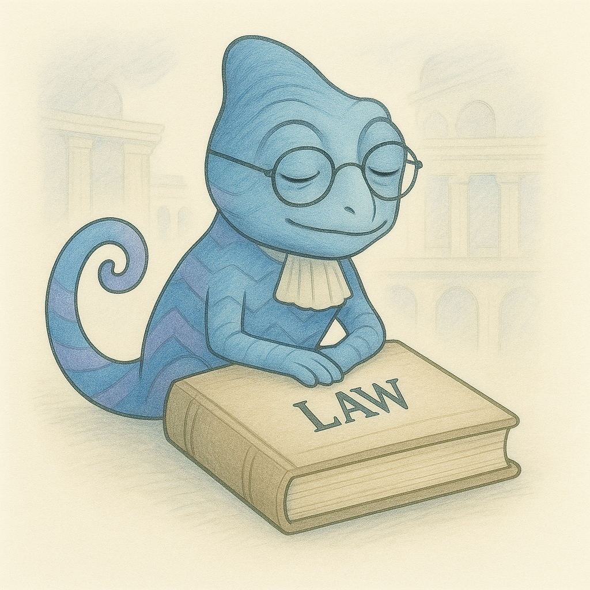

The Administrative Procedure Act provides the primary framework for judicial review of agency actions in § 706. This section establishes the standards that courts apply when reviewing agency decisions, from deferential standards like "arbitrary and capricious" to more stringent review for certain legal and factual determinations.
APA § 706: Scope of Review
The reviewing court shall:
Compel agency action unlawfully withheld or unreasonably delayed; and
Hold unlawful and set aside agency action, findings, and conclusions found to be:
Arbitrary, capricious, an abuse of discretion, or otherwise not in accordance with law;
Contrary to constitutional right, power, privilege, or immunity;
In excess of statutory jurisdiction, authority, or limitations, or short of statutory right;
Without observance of procedure required by law;
Unsupported by substantial evidence in a case subject to sections 556 and 557 or otherwise reviewed on the record of an agency hearing provided by statute; or
Unwarranted by the facts to the extent that the facts are subject to trial de novo by the reviewing court.
In making the foregoing determinations, the court shall review the whole record or those parts of it cited by a party, and due account shall be taken of the rule of prejudicial error.
Key Principles of Judicial Review
Record Review: Courts generally limit their review to the administrative record that was before the agency at the time of its decision
No De Novo Review: Courts do not typically substitute their judgment for the agency's, particularly on factual and policy questions
Different Standards: The standard of review varies depending on the type of agency action and the nature of the challenge
Prejudicial Error: Even if an agency error is found, relief may be denied if the error was harmless
Substantial Evidence Review
The "substantial evidence" standard applies to formal agency proceedings conducted under §§ 556 and 557 of the APA or when a statute specifically requires this standard of review. This standard focuses on the factual findings made by the agency.
Universal Camera Corp. v. NLRB (1951)
340 U.S. 474
The NLRB found that Universal Camera had fired an employee for giving testimony under the National Labor Relations Act and ordered his reinstatement. This finding contradicted the trial examiner's conclusion that the employee was fired for insubordination. The Second Circuit upheld the Board's decision without considering the examiner's report as part of the record.
The Supreme Court held that courts must consider the whole record, including the hearing examiner's findings, when determining whether an agency's decision is supported by substantial evidence.
Justice Frankfurter's opinion established that:
Substantial evidence is "more than a mere scintilla" and is "such relevant evidence as a reasonable mind might accept as adequate to support a conclusion"
Courts must consider "the record as a whole," including evidence that detracts from the agency's conclusion
The examiner's findings, while not binding on the agency, are part of the record and must be considered by reviewing courts
Congress intended the substantial evidence standard to involve more careful scrutiny than courts had previously applied
Allentown Mack Sales & Service, Inc. v. NLRB (1998)
522 U.S. 359
Allentown Mack acquired a factory branch and conducted a poll of employees regarding union support after hearing statements from several employees indicating lack of support for the union. The NLRB found that Allentown lacked a sufficient "good-faith reasonable doubt" about the union's majority status to justify polling employees.
The Supreme Court overturned the NLRB's decision, finding that it was not supported by substantial evidence. The Court criticized the Board for applying a standard that differed from what it purported to apply.
Justice Scalia's majority opinion:
Emphasized that the substantial evidence standard is equivalent to whether a reasonable jury could reach the agency's conclusion
Criticized the NLRB for saying it applied a "reasonable doubt" standard while actually requiring virtual certainty
Found that Allentown had presented sufficient evidence to establish a reasonable doubt about the union's majority support
Insisted that agencies must adhere to the standards they announce, not merely pay "lip service" to them
Understanding Substantial Evidence Review
Definition: "Such relevant evidence as a reasonable mind might accept as adequate to support a conclusion"
Quantum: More than a "mere scintilla" but less than a "preponderance of the evidence"
Scope: Requires examination of the "whole record," including evidence that contradicts the agency's conclusion
Deference: Courts do not substitute their judgment for the agency's, but ensure that the agency's factual findings have rational support in the record
Comparison: Similar to the standard for denying a directed verdict in a jury trial
Arbitrary and Capricious Review
The "arbitrary and capricious" standard in § 706(2)(A) of the APA applies to all forms of agency action not covered by other standards. This standard has evolved over time, from a highly deferential approach to what is now often called "hard look" review, which requires agencies to articulate clear explanations for their decisions based on relevant factors.
Citizens to Preserve Overton Park v. Volpe (1971)
401 U.S. 402
The Department of Transportation approved funding for a highway through Overton Park in Memphis. Environmental groups challenged the decision, arguing that the Secretary failed to make the required finding that no "feasible and prudent alternative" existed and failed to adequately consider ways to minimize harm to the park.
The Supreme Court held that the Secretary's decision was subject to judicial review under the APA's arbitrary and capricious standard, which required the Court to determine whether the decision was based on a consideration of relevant factors and whether there was a clear error of judgment.
Justice Marshall's opinion established that:
While the arbitrary and capricious standard is narrow, it still requires a "thorough, probing, in-depth review"
Courts must examine whether the agency considered relevant factors and articulated a satisfactory explanation
Post-hoc rationalizations cannot substitute for contemporaneous agency explanations
Review must be based on the "whole record" before the agency at the time of the decision
Motor Vehicle Manufacturers Association v. State Farm Mutual Automobile Insurance Co. (1983)
463 U.S. 29
The National Highway Traffic Safety Administration (NHTSA) rescinded a rule requiring passive restraints (automatic seatbelts or airbags) in new cars. The agency cited doubts about safety benefits and costs, particularly because it believed most manufacturers would install detachable automatic seatbelts that might not be used.
The Supreme Court held that NHTSA's rescission of the passive restraint rule was arbitrary and capricious because the agency failed to consider obvious alternatives and did not offer a reasoned explanation for its decision.
Justice White's majority opinion articulated that under arbitrary and capricious review, an agency must:
Examine relevant data and articulate a satisfactory explanation for its action
Consider all important aspects of the problem
Offer an explanation that is consistent with the evidence
Consider obvious alternative solutions
The Court found that NHTSA failed to consider requiring airbags as an alternative and failed to explain why automatic seatbelts would not increase safety, even if detachable.
The State Farm Test for Arbitrary and Capricious Review
Under State Farm, agency action is arbitrary and capricious if the agency:
Relied on factors that Congress did not intend it to consider
Entirely failed to consider an important aspect of the problem
Offered an explanation for its decision that runs counter to the evidence before the agency
Is so implausible that it could not be ascribed to a difference in view or the product of agency expertise
This test has become the cornerstone of modern arbitrary and capricious review, often referred to as "hard look" review because it requires courts to take a "hard look" at the agency's reasoning process.
Massachusetts v. EPA (2007)
549 U.S. 497
In response to a petition for rulemaking, the EPA denied a request to regulate greenhouse gas emissions from new motor vehicles under the Clean Air Act. The EPA argued that (1) the Clean Air Act did not authorize it to address global climate change, and (2) even if it had authority, it would be unwise to regulate greenhouse gases at that time due to scientific uncertainty and foreign policy considerations.
The Supreme Court held that the EPA's denial of the petition was arbitrary and capricious because the agency relied on impermissible considerations outside the statutory text. The Clean Air Act required the EPA to determine whether greenhouse gases "cause, or contribute to, air pollution which may reasonably be anticipated to endanger public health or welfare," not to consider policy reasons for declining to regulate.
Justice Stevens' majority opinion explained that:
The Clean Air Act's language is unambiguous regarding the EPA's obligation to regulate harmful air pollutants
The EPA cannot refuse to regulate based on considerations not mentioned in the statute
The agency's discretion is limited to determining whether greenhouse gases cause or contribute to air pollution that may endanger public health or welfare
If the EPA determines that greenhouse gases do endanger public health or welfare, it must regulate them
Fox v. FCC (2009)
556 U.S. 502
The FCC changed its policy regarding "fleeting expletives" on broadcast television, abandoning its previous position that isolated or fleeting expletives were not actionable. This change followed incidents involving celebrities using profanity during live broadcasts. The networks challenged this policy change as arbitrary and capricious.
The Supreme Court held that an agency's change in policy is not subject to more heightened scrutiny under the APA than the adoption of a policy in the first instance. The agency must acknowledge the change, show that the new policy is permissible under the statute, and provide good reasons for the change, but need not prove that the new policy is better than the old one.
Justice Scalia's majority opinion:
Rejected the idea that agency policy changes face a heightened standard of review
Held that the APA makes no distinction between initial policy formulations and subsequent changes
Stated that an agency "need not demonstrate to a court's satisfaction that the reasons for the new policy are better than the reasons for the old one"
Required only that an agency acknowledge the change, show awareness that its interpretation is changing, show the new policy is permissible under the statute, and provide good reasons for the change
If the new policy rests on factual findings contradicting those underlying the previous policy, a more detailed justification may be required
Department of Homeland Security v. Regents of the University of California (2020)
140 S. Ct. 1891
The Department of Homeland Security (DHS) decided to rescind the Deferred Action for Childhood Arrivals (DACA) program, which allowed certain unauthorized immigrants who came to the U.S. as children to apply for work authorization and protection from deportation. The stated reason was that DACA was illegal based on the Fifth Circuit's ruling against a related program (DAPA).
The Supreme Court held that the rescission of DACA was arbitrary and capricious because DHS failed to consider important aspects of the problem, including whether to retain the forbearance policy (non-deportation) while terminating benefits like work authorization, and failed to address reliance interests.
Chief Justice Roberts' opinion:
Applied the State Farm arbitrary and capricious standard
Found that DHS failed to consider important aspects of the problem, particularly whether to maintain forbearance while terminating other benefits
Held that DHS failed to address the significant reliance interests of DACA recipients, their families, employers, and schools
Rejected post hoc rationalizations offered by the government after litigation began
Emphasized that the Court was not deciding whether DACA or its rescission were sound policies, only whether the agency complied with procedural requirements
Chevron Deference
I represent the Chevron doctrine, which guided courts in reviewing agency interpretations of statutes for decades. Though the Supreme Court overturned Chevron in 2024, understanding its framework remains crucial for administrative law!

What I Can Teach You
I'll help you understand:
How courts approached statutory interpretation under the Chevron framework
The evolution of judicial deference to agency interpretations
How the Loper Bright decision has changed the landscape
Techniques for analyzing agency statutory interpretations on your exam
Historical Importance of Chevron
Even though the Chevron framework is no longer governing law after the 2024 Loper Bright decision, understanding it remains crucial for several reasons:
Decades of administrative law decisions were based on this framework
The transition away from Chevron is still developing
The reasoning behind Chevron helps understand broader administrative law principles
Your exam may test your understanding of both pre- and post-Loper Bright approaches
For nearly four decades, Chevron U.S.A. Inc. v. Natural Resources Defense Council, Inc. (1984) provided the framework for judicial review of agency statutory interpretations. The Chevron doctrine instructed courts to defer to reasonable agency interpretations of ambiguous statutes that the agencies administer.
Chevron U.S.A. Inc. v. Natural Resources Defense Council, Inc. (1984)
467 U.S. 837
The EPA promulgated a regulation interpreting the term "stationary source" in the Clean Air Act to include an entire industrial plant (the "bubble concept") rather than individual pieces of equipment. This allowed plants to modify some equipment without triggering stringent permit requirements as long as total emissions did not increase. Environmental groups challenged this interpretation.
The Supreme Court established a two-step framework for reviewing agency interpretations of statutes:
Step One: Has Congress directly spoken to the precise question at issue? If the intent of Congress is clear, that is the end of the matter.
Step Two: If the statute is silent or ambiguous with respect to the specific issue, the question for the court is whether the agency's interpretation is based on a permissible construction of the statute.
The Court upheld the EPA's "bubble concept" as a reasonable interpretation of an ambiguous statutory term.
Justice Stevens' opinion reasoned that:
Courts should defer to agency interpretations of ambiguous statutes because agencies have expertise and political accountability
When Congress leaves a gap in a statute, it implicitly delegates authority to the agency to fill that gap
Courts should not substitute their own policy judgments for those of the agency
The EPA's interpretation represented a reasonable accommodation of competing interests
flowchart TD
start["Chevron Framework for
Agency Statutory Interpretation"] --> step1["Step One:
Has Congress directly spoken
to the precise question at issue?"]
step1 -->|"Yes"| congressional["Apply the clear
congressional intent"]
step1 -->|"No"| step2["Step Two:
Is the agency's interpretation
based on a permissible
construction of the statute?"]
step2 -->|"Yes"| defer["Defer to the
agency's interpretation"]
step2 -->|"No"| reject["Reject the
agency's interpretation"]
classDef chevron fill:#E6F0ED,stroke:#247BA0,stroke-width:2px,color:#000000
class start,step1,step2,congressional,defer,reject chevron
United States v. Mead Corp. (2001)
533 U.S. 218
The U.S. Customs Service issued a tariff classification ruling letter that reclassified Mead's day planners as "bound diaries" subject to tariff. These ruling letters were not the product of notice-and-comment rulemaking and were not intended to have precedential effect.
The Supreme Court held that Chevron deference applies only when Congress has delegated authority to the agency to make rules carrying the force of law, and the agency interpretation was promulgated in the exercise of that authority. For less formal interpretations, courts may still give them respect according to their persuasiveness (Skidmore deference).
Justice Souter's opinion:
Recognized a "category of interpretive choices distinguished by an additional reason for judicial deference"
Found that Chevron applies when Congress delegated authority to make rules with the force of law
Identified notice-and-comment rulemaking or formal adjudication as good indicators of such delegation
Established that for less formal interpretations, courts apply Skidmore deference, considering "the thoroughness evident in its consideration, the validity of its reasoning, its consistency with earlier and later pronouncements, and all those factors which give it power to persuade"
NLRB v. Hearst Publications (1944)
322 U.S. 111
The NLRB determined that newsboys selling papers on the street were "employees" under the National Labor Relations Act and thus entitled to collective bargaining rights. Hearst Publications argued that the newsboys were independent contractors under common law principles.
The Supreme Court upheld the NLRB's determination, holding that the term "employee" in the NLRA should not be limited to traditional common law definitions but interpreted in light of the statute's purposes and economic realities.
Justice Rutledge's opinion:
Rejected the notion that Congress intended to incorporate common law distinctions between employees and independent contractors
Emphasized that the term "employee" should be defined in light of the statute's purposes and the economic realities of the relationship
Noted the newsboys' economic dependence on the publishers and lack of bargaining power
Deferred to the NLRB's determination as supported by substantial evidence and within its statutory authority
Skidmore v. Swift & Co. (1944)
323 U.S. 134
Employees who served as fire guards at Swift & Co. sought overtime pay under the Fair Labor Standards Act for time they spent on call at the employer's premises. The Administrator of the Wage and Hour Division had issued an interpretive bulletin addressing on-call time, but the lower courts did not consider it.
The Supreme Court held that while the Administrator's interpretations were not binding on courts, they should be given respect according to their persuasiveness, based on "the thoroughness evident in its consideration, the validity of its reasoning, its consistency with earlier and later pronouncements, and all those factors which give it power to persuade."
Justice Jackson's opinion:
Recognized that administrative interpretations are not controlling upon courts but are still entitled to respect
Identified factors to weigh when evaluating agency interpretations: thoroughness, reasoning, consistency, and persuasiveness
Emphasized that the Administrator's policies were made in the pursuit of his duties and based on specialized experience
Distinguished between interpretive rules, which advise the public, and legislative regulations, which bind courts
FDA v. Brown & Williamson Tobacco Corp. (2000)
529 U.S. 120
The FDA asserted jurisdiction to regulate tobacco products as "drugs" and "devices" under the Food, Drug, and Cosmetic Act (FDCA). For decades, the FDA had disclaimed such authority, but it reversed this position in 1996, concluding that nicotine was a "drug" and cigarettes were "devices" that delivered nicotine to the body.
The Supreme Court held that Congress had not delegated authority to the FDA to regulate tobacco products. The Court reasoned that if the FDA had jurisdiction over tobacco products, it would be required to ban them entirely, which Congress could not have intended given its subsequent tobacco-specific legislation.
Justice O'Connor's majority opinion:
Looked beyond the specific statutory text to the broader context of tobacco regulation
Emphasized that Congress had enacted six tobacco-specific statutes since 1965, none of which granted the FDA authority to regulate tobacco
Noted that the FDA's statutory mandate to ensure product safety would require it to ban tobacco products entirely, which would contradict Congress's clear intent
Invoked what later became known as the Major Questions Doctrine: "we are confident that Congress could not have intended to delegate a decision of such economic and political significance to an agency in so cryptic a fashion"
Michigan v. EPA (2015)
576 U.S. 743
The Clean Air Act authorized the EPA to regulate power plants if it found regulation was "appropriate and necessary." The EPA determined that regulation of hazardous air pollutants from power plants was appropriate and necessary, but it explicitly refused to consider costs in making this threshold determination.
The Supreme Court held that the EPA interpreted the statute unreasonably by refusing to consider cost when determining whether regulation of power plants was "appropriate and necessary." The Court found that "appropriate" naturally includes consideration of costs.
Justice Scalia's majority opinion:
Stated that the phrase "appropriate and necessary" naturally requires consideration of all relevant factors, including cost
Emphasized that agencies normally consider both costs and benefits of regulation
Found it unreasonable for the EPA to impose billions in economic costs for relatively modest benefits without considering those costs
Did not require a formal cost-benefit analysis, but held that "reasonable regulation ordinarily requires paying attention to cost"
Modifications to Chevron Over Time
Before its overruling, the Chevron doctrine had been modified by several important cases:
Step Zero: Mead established a preliminary inquiry into whether Chevron applies at all
Major Questions Doctrine: Courts should not defer to agency interpretations on questions of major economic or political significance unless Congress has clearly delegated authority to the agency on that question, as seen in Brown & Williamson
Statutory Interpretation Tools: Courts increasingly used traditional tools of statutory construction at Step One, often finding clear congressional intent where earlier courts might have found ambiguity
Reasoned Explanation: Encino Motorcars LLC v. Navarro held that an agency must provide a reasoned explanation for changing interpretations
Chevron Analysis Challenge
Try analyzing this scenario using the traditional Chevron framework, then consider how the analysis would change after Loper Bright:
The Clean Air Act requires "the best system of emission reduction" for power plants. The EPA interprets this to allow regulation based on shifting generation from coal to natural gas and renewables rather than just controlling emissions at individual facilities.
Questions to consider:
Under Chevron Step One, is the phrase "best system of emission reduction" ambiguous?
Under Chevron Step Two, is the EPA's interpretation reasonable?
After Loper Bright, how would a court approach this interpretive question differently?
Does the Major Questions Doctrine apply to this scenario?
Analysis:
Chevron Framework (Historical Approach):
Step One: The phrase "best system" is arguably ambiguous. "System" could refer to controls at individual sources or could encompass broader approaches.
Step Two: The EPA's interpretation might be reasonable as "system" can include generation-shifting measures.
Post-Loper Bright Approach:
Courts now determine the "best reading" of the statute using traditional tools of statutory interpretation.
Courts would examine text, structure, purpose, precedent, and legislative history.
The court would likely focus more heavily on whether "system" in this context traditionally meant controls at individual sources.
Major Questions Doctrine:
This interpretation would likely trigger the Major Questions Doctrine (as it did in West Virginia v. EPA).
Courts would require clear congressional authorization for such a significant regulatory approach.
The economic and political significance of generation-shifting would demand explicit statutory support.
Beyond Chevron: Loper Bright and Recent Developments
In 2024, the Supreme Court overruled Chevron in Loper Bright Enterprises v. Raimondo, marking a significant shift in administrative law. This section examines this landmark case and its implications for judicial review of agency statutory interpretations.
Loper Bright Enterprises v. Raimondo (2024)
No. 22-451, 600 U.S. ___ (2024)
Fishing companies challenged a rule issued by the National Marine Fisheries Service that required them to pay for required federal observers on their vessels. The rule was based on the Magnuson-Stevens Act, which required fishers to allow observers aboard but did not explicitly address who should pay for them. The D.C. Circuit applied Chevron and deferred to the agency's interpretation.
The Supreme Court explicitly overruled Chevron, holding that courts should no longer defer to agency interpretations of ambiguous statutes. Instead, courts must exercise their independent judgment to determine the best reading of the statute, while giving due respect to agency expertise and considered views.
Chevron was inconsistent with the APA's instruction that "the reviewing court shall decide all relevant questions of law"
Judicial deference to agency interpretations violated separation of powers principles by abdicating the judicial duty to say what the law is
Chevron created an unpredictable and unstable legal regime where the meaning of federal statutes could change with each new administration
While courts should give appropriate respect to an agency's views, they must not "defer" by elevating the agency's interpretation over what the court believes is the best reading of the statute
Post-Chevron Judicial Review
After Loper Bright, courts reviewing agency statutory interpretations must:
Exercise independent judgment to determine the best reading of the statute
Consider the agency's views with appropriate respect based on the agency's expertise and the persuasiveness of its reasoning
Apply traditional tools of statutory construction, including text, structure, history, and purpose
Evaluate an agency's interpretation based on its thoroughness, consistency, formality, and expertise (Skidmore-like factors)
The overruling of Chevron represents one of the most significant changes in administrative law in decades. Its full implications will take years to develop as lower courts adapt to the new framework for reviewing agency statutory interpretations. Some observers suggest that the post-Loper Bright approach resembles a return to Skidmore deference, where courts consider but are not bound by agency interpretations.
Kisor v. Wilkie (2019)
139 S. Ct. 2400
A Vietnam War veteran sought retroactive disability benefits based on his PTSD diagnosis. The Department of Veterans Affairs denied his request, interpreting its regulation to require new "relevant" records, which it determined did not include the veteran's psychiatric records. The Federal Circuit deferred to the agency's interpretation under Auer v. Robbins (1997), which required deference to an agency's interpretation of its own regulations.
The Supreme Court declined to overrule Auer deference but significantly narrowed its application. Justice Kagan's opinion established a multi-step test for when courts should defer to an agency's interpretation of its own regulations.
Justice Kagan's majority opinion:
Preserved Auer deference but limited it to cases where: (1) the regulation is genuinely ambiguous; (2) the agency's interpretation is reasonable; (3) the interpretation represents the agency's authoritative position; (4) the interpretation implicate's the agency's substantive expertise; and (5) the interpretation reflects the agency's fair and considered judgment
Emphasized that before deferring, courts must exhaust all traditional tools of interpretation
Instructed courts not to defer to "convenient litigating positions" or "post hoc rationalizations"
Justice Gorsuch's concurrence (joined by Justice Thomas, Justice Kavanaugh, and Justice Alito) argued that Auer deference should be overruled entirely as inconsistent with the APA and separation of powers principles.
The future of Auer deference (now Kisor deference) for agency interpretations of their own regulations is uncertain following Loper Bright. Many of the same arguments that led the Court to overrule Chevron could apply equally to Auer/Kisor deference, suggesting it may be vulnerable to a future challenge.